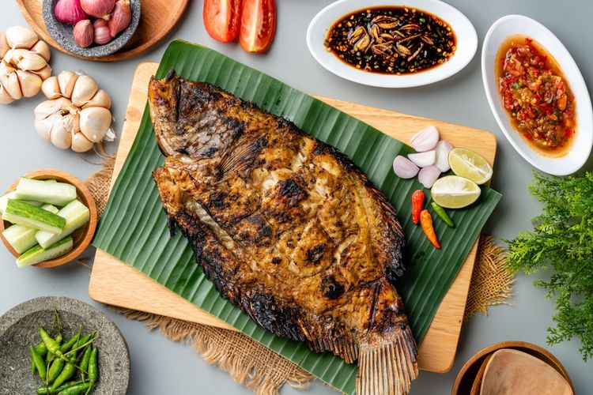

Ikan bakar is a popular Indonesian and Malaysian dish consisting of barbecued fish. Sometimes, there are also other types of seafood such as squids, cockles, and clams included in the dish. The name ikan bakar literally means burnt fish in the Malay language. It is very important to marinate the fish before grilling in order for it to retain its moisture. The marinades usually consist of chili paste, soy sauce, turmeric, galangal, and other seasonings. The dish is traditionally served with dipping sauces such as sambal belacan and sambal kecap on the side.
Meal prep time : 55 minutes
Servings : 2